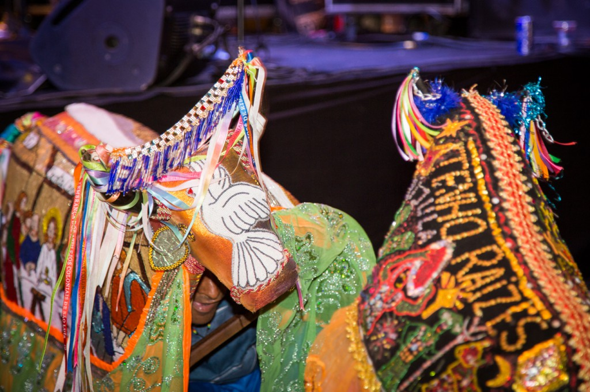
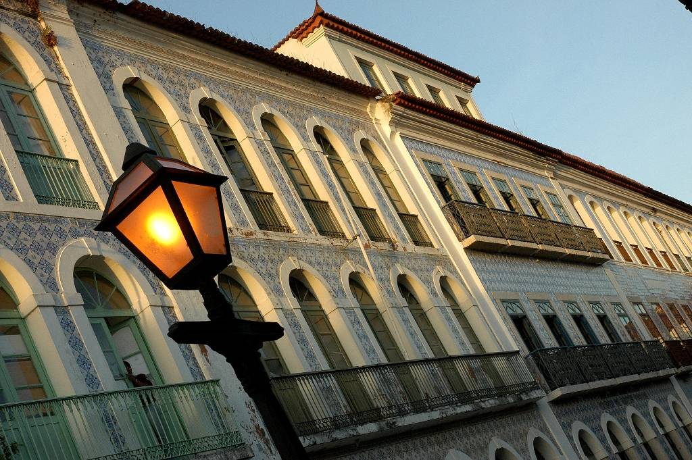
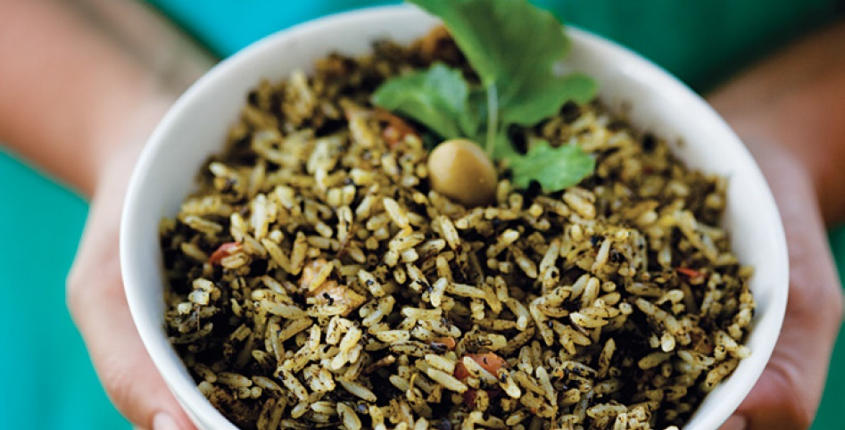
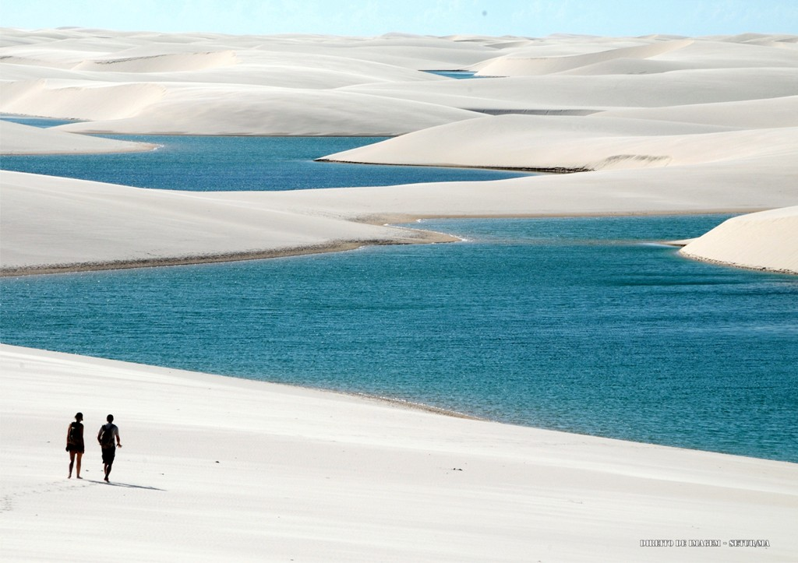

Maranhão - Diversidade Cultural
Bumba-Meu-Boi
Num espetáculo de cores, danças e ritmos, o Bumba-Meu-Boi é a expressão máxima da cultura popular do Maranhão.
Elevado a Patrimônio Imaterial do povo brasileiro, a manifestação tem origens indefinidas, mas elementos culturais africanos e europeus, introduzidos principalmente por meio da religiosidade, são evidentes. Nas comunidades que fazem a brincadeira, as celebrações e o trabalho em torno da festa duram praticamente o ano inteiro.
Um dos desafios é preparar o couro do boi, revestimento de camurça belamente decorado com canutilhos que recobrem o corpo do animal, pois é de bom tom que este seja renovado a cada temporada. Mas é durante os festejos juninos que ele reina absoluto, arrastando multidões e encantando quem assiste pela primeira vez suas apresentações. No Bumba-Meu-Boi do Maranhão a variedade de sotaques, ou ritmos, faz a diferença.
Centro Histórico de São Luís
Passear pelo Centro Histórico de São Luís e conhecer a história de cada beco e dos muitos casarões históricos é uma experiência encantadora.
Além de propiciar uma viagem no tempo, o passeio nos traz a certeza da beleza e do charme dos 4 mil casarões, distribuídos por mais de 220 hectares, tombados como Patrimônio Mundial da Humanidade pela Unesco desde 1997.
Os casarões seculares, em sua maioria, revestidos de azulejos portugueses pintados à mão, compõe um dos mais importantes conjuntos arquitetônicos de essência portuguesa ainda preservados da América Latina.
Gastronomia Local
Foram tantos os temperos e influências de europeus, índios, africanos e outros povos, que a culinária maranhense só poderia dar no que deu: uma conjunção exuberante, única, inigualável de sabores e receitas na medida para surpreender.
Nessa mesa farta existe, é claro, um carro chefe. É o celebrado arroz de cuxá, que vai muito bem com frutos do mar e tem como principal ingrediente uma folha azedinha chamada vinagreira, além de camarão seco e gergelim.
Lençóis Maranhenses
Os Lençóis Maranhenses ficam no litoral oriental do Maranhão e compreende os municípios de Humberto de Campos, Primeira Cruz, Santo Amaro e Barreirinhas, este último sendo o principal portão de entrada para esta fantástica beleza natural.
Seu maior atrativo, é o Parque Nacional dos Lençóis Maranhenses, às margens do Rio Preguiças. São 155 mil hectares de paisagem deslumbrantes, cheio de dunas com até 40 metros de altura e lagoas de água doce e cristalina.
O Parque é considerado uma formação geológica rara no planeta, apresentando um ecossistema único e riquíssimo. As dunas chegam do litoral adentrando em até 25 Km da costa e as inúmeras e límpidas lagoas se formam com as chuvas do período chuvoso que vai de dezembro até abril.
Um pouco do Maranhão
Ficou curioso? Assista esses vídeos para ter um gostinho a mais.
Próximos eventos
Quer ficar por dentro dos eventos culturais do Estado? Preencha nosso formulário e receba notícias direto no seu e-mail!